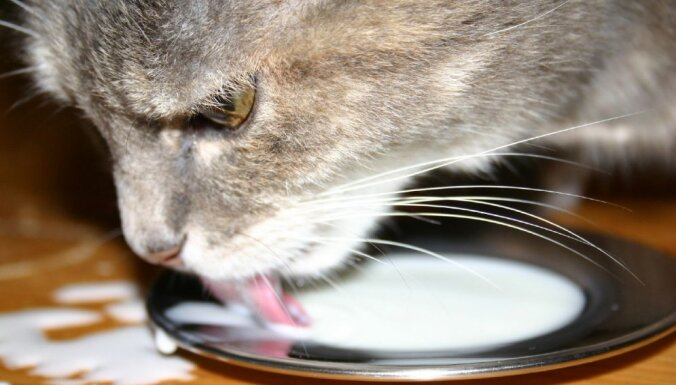
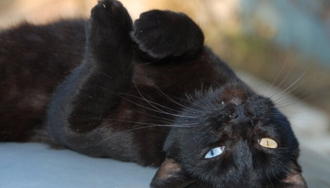

Mīti par kaķiem:
atpakaļ
Mīts: Kaķiem garšo piens un bez tā viņu dzīve nav iedomājama.
Par spīti neskaitāmajiem skaistajiem attēliem, kur kaķi redzami lokam
pienu,daudziem no viņiem piens pat negaršo.
Turklāt lielai daļai kaķu ir
laktozes jeb piena cukura nepanesamība,kuras dēļ pēc piena baudīšanas
tiem rodas vēdera darbības traucējumi un caureja.
Ir gan arī kaķi,kuri
labprāt šad tad iedzer mazliet piena un tas viņiem nekādu diskomfortu nesagādā.
Ja jūsu kaķis ir viens no tiem,cienājiet viņu ar pienu prātīgi speciālisti neiesaka
dot vairāk par piecām ēdamkarotēm piena dienā.

Mīts: Melni kaķi nes nelaimi
Mīts,ka melni kaķi nes nelaimi,pastāv gadsimtiem ilgi,un šī māņticība,kurai nav ne
mazākā pamata,ir ļoti izplatīta joprojām.Ne velti melns kaķis bieži tiek attēlots uz
dažādiem Helovīnu svētkiem paredzētiem dekoriem un figurē kā nelaimes vai briesmu vēstnesis
daudzās šausmu filmās.Patiesībā,protams,melni kaķi nenes nelaimi.Par to liecina kaut vai tas,
ka Lielbritānijā un Austrālijā,ieraugot melnu kaķi,priecājas,jo uzskata,ka tas ir uz laimi.
